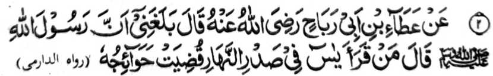

Hadith 2

Miyakathitayan ko Ata ibn-e-Abi Rabah (Radhiallaho ‘Anho) a pitharo iyan,
“Minisampay raken a mata-an a so Rasulollah (Sallallaho ‘Alaihi wa Sallam) na pitharo iyan, ‘Sa tao
a batiya-an niyan so Surah Yasin si-i ko pegangan o kadaondao, na angkosan
non so langon o singanin niyan ko mababasa alongan.’”
Madakel a kalbihan o Surah Yasin a miya-aloy ko manga Hadith:
-
Miya-aloy niyan sa isa a Hadith, “Omani nganin a shaiy na aden a poso
iyan, go aya poso o Qur’an na so Surah Yasin. Sa tao a batiya-an niyan so
Surah Yasin, na pakisorat o Allah a bagi-an niyan a timbang o ba niyan
miyaka-sapolo matamat so Qur’an.”
-
Miya-aloy niyan pen ko isa a Hadith, a so Allah na biyatiya Iyan so Surah
Yasin ago so Surah Taha ko miyaka-sanggibo ragon ko da Niyan pen
ka-adena ko langit ago so lopa, na so kiyanega iran si-i na so manga
Mala-ikat na pitharo iran, “Miyagontong so Ummat a kithoron non so
Qur’an, go miyagontong so manga poso a khadaleman non, ma-ana
phakalangagon, ago miyagontong so dila a phakabatiya-on.”
-
Aden pen a isa a ‘riwayat’ a lagida-i, “Sa tao a batiya-an niyan so Surah
Yasin a soa-soat ko Allah, na so langon o miya-ona dosa niyan na
perila-an. Giyoto-i sabap a baloya niyo a dadabi-atan so kapembatiya-a
sangka-iya Surah ko obay o phamatay rekano.”
-
Miya-aloy niyan pen ko isa a Hadith, a so Surah Yasin na aya ngaran niyan
ko Taurat na ‘Mun’imah’ (pephamegay sa mapiya), sabap sa kadadaleman sa
manga pipiya a bagi-an o pembatiya-on si-i sa donya taman sa Akhirat; go
pephokasen niyan pen ko tao so manga boko sangka-iya donya taman sa
Akhirat, ago phokasen niyan non pen so kalek sangkoto a mon a Gawi-i.
-
Giyangka-iya Surah na i-ingaranan pen sa ‘Rafi-ah Khafidah’, ma-ana so
pephakaporo ko daradat o miyamaratiyaya ago pephakadapanas ko da
pamaratiyaya.
-
Miya-aloy niyan ko isa a ‘riwayat’, a pitharo o Rasulollah (Sallallaho ‘Alaihi wa Sallam),
“Mazisinganin o poso aken a so Surah Yasin na madalem ko poso o
pithanggisa-an ko manga Ummat aken.”
-
Miya-aloy niyan pen ko isa a Hadith, “Opama ka so tao na batiya-an niyan
so Surah Yasin oman gagawi-i na ron kapantagi a kapatay, na miyatay
sekaniyan a Shahid.”
Miya-aloy niyan sa isa a Hadith, “Sa tao a batiya-an niyan so Surah Yasin, na perila-an,
- sa tao a batiya-an niyan ko kapekha-or iyan na khada so ka-or iyan,
- sa tao a batiya-an niyan ko kiyadadag iyan sa lalan na khato-on niyan so lalan,
- sa tao a batiya-an niyan ko kiyada-i ron sa ayam, na khato-on niyan so ayam.
-
Go sa tao a batiya-an niyan ko kapekhalek iyan sa ba di tho-on so
pangenengken, na mabaloy so pangenengken a maka-ampel.
-
Go sa tao a batiya-an niyan ko obay o zasakaratal maot, na leboden
rekaniyan so kasakit o kapatay,
-
go sa tao a batiya-an niyan ko obay o ba-i a pekharitan na leboden non so
kakharitan.”
So Maqri (Rahmatullahi ‘Alaihi) na pitharo iyan, “Opama ka batiya-a o tao a aden a ipekhalek
iyan a dato o di na rido-ai, na pakada-an so kalek iyan.” Miya-aloy niyan
pen sa isa a Hadith a opama ka aden a matiya sa Surah Yasin ago Surah
Was-Saaffat ko alongan a Jomoah, na oriyan niyan na mamangeni ko Allah, na
so pangeni niyan na tarima-an [o Allah].
(Kadakelan sangka-iya a manga Hadith a miya-aloy niyan na inabat ko [kitab
a] Mazahir-e-Haq, ogaid na so saba-ad ko manga Olama na di ran sasarigan so
saba-ad ko manga riwayat.)